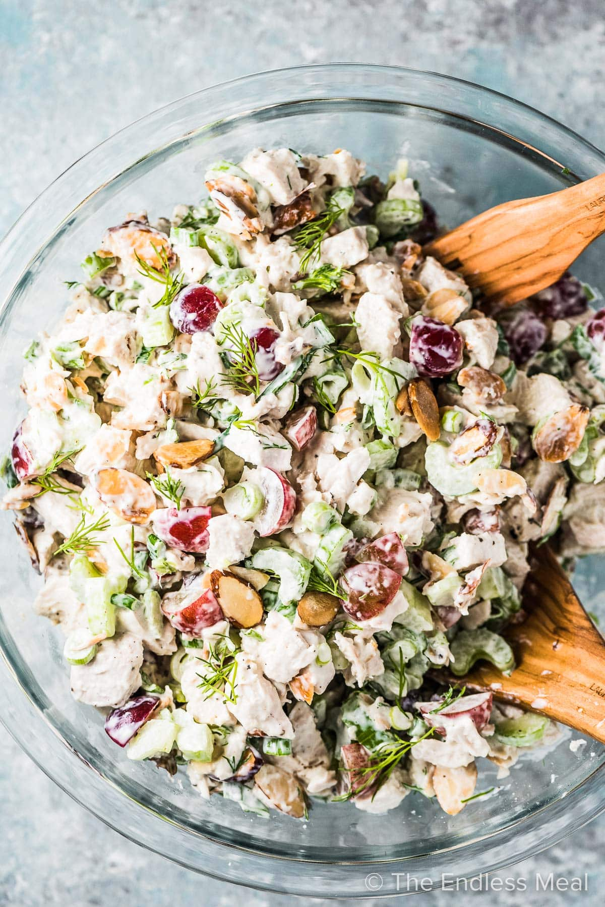

Chicken Salad

Description
The best classic Chicken Salad recipe is flavorful with simple ingredients. Baked, grilled, or canned chicken with a couple other household ingredients make this salad taste like heaven. Feel free to add in whatever you want but this is great just as it is! You can eat this as a sandwich or for a low-carb and make a Keto chicken salad by eating it in lettuce wraps or by itself.
Ingredients
- 3 cups cooked chicken, diced
- 1/2 cup mayonnaise
- 1/3 cup sliced green onions
- 1/2 cup finely chopped celery
- 2 teaspoons lemon juice
- 1 tablespoon paprika
- 4 tablespoons chopped dill pickle
- 2 tablespoons dill weed
Steps
- Add all the ingredients to a bowl and combine well. The salt will need about 30 minutes to dissolve. Add more salt if needed and add pepper to taste. Chill in the fridge until ready to serve.
- Serve on sliced bread or croissants. For a low-carb version serve as lettuce wraps or all alone.